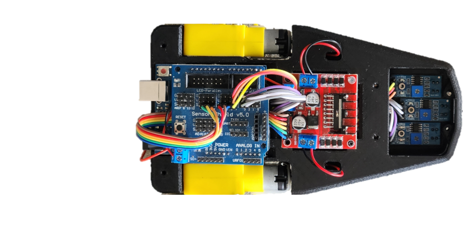
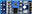

Escala: Las pistas deben estar a 1000 pixeles/metro (e.g., un segmento de 0.35m en la vida real debe ser 350px en la imagen).
Para agregar pistas predefinidas, edite la variable AVAILABLE_TRACKS en js/config.js.
Cargar Pista Personalizada (PNG)
La imagen de la pista debe estar escalada a 1000 píxeles/metro. Después de cargar, deberás establecer la posición y dirección inicial haciendo clic y arrastrando sobre la pista.
Parámetros de Simulación [+]
Geometría del robot [+]
La geometría del robot se edita en el "Editor de Robot". Estos son valores de solo lectura o por defecto.
Parámetros del Código (PID)
Entendiendo el Controlador PID y los Parámetros del Código [+]
El robot utiliza un controlador PID (Proporcional-Integral-Derivativo) para seguir la línea. El objetivo es minimizar el "error", que es la desviación del robot del centro de la línea, calculado a partir de los sensores frontales.
Error (Err): Mide qué tan lejos y hacia qué lado está el robot de la línea. Cero significa centrado. Un error positivo indica que la línea está a la derecha del robot (o el robot está a la izquierda de la línea). Un error negativo indica que la línea está a la izquierda del robot.
Término Proporcional (P): Reacciona al error actual (P = Kp * Error). Una Kp alta da una respuesta rápida pero puede causar oscilaciones.
Término Integral (I): Acumula errores pasados (I = Ki * Suma_Errores_Ponderada_Por_Tiempo). Elimina errores estacionarios (desviaciones pequeñas pero persistentes). Una Ki alta puede causar inestabilidad o "integral windup" si no se limita.
Término Derivativo (D): Reacciona a la tasa de cambio del error (D = Kd * (Error_Actual - Error_Previo) / tiempo_paso). Amortigua la respuesta, reduce el sobreimpulso y ayuda a anticipar futuros errores. Una Kd alta puede amplificar el ruido de los sensores.
Ajuste PID (AdjPID): Es la suma P + I + D. Este valor ajusta la velocidad de los motores:
VelocidadBruta_Derecho = VELOCIDAD_BASE - AdjPID,
VelocidadBruta_Izquierdo = VELOCIDAD_BASE + AdjPID.
Estos valores brutos pueden ser positivos (adelante) o negativos (reversa). La magnitud (después de aplicar valor absoluto, deadband y limitación a 255) se convierte en la señal PWM para la velocidad del motor, y el signo determina la dirección.
Parámetros Ajustables del Código:
Arduino Kp: Ganancia Proporcional. Controla la fuerza de la corrección basada en el error actual.
Arduino Ki: Ganancia Integral. Controla la influencia de la acumulación de errores pasados.
Arduino Kd: Ganancia Derivativa. Controla la influencia de la predicción del error basada en su tasa de cambio.
VELOCIDAD_BASE (0-255): Velocidad de referencia (PWM) para ambos motores cuando el error es cero.
INTEGRAL_MAX: Límite para el valor acumulado del término integral (antes de multiplicarlo por Ki), para prevenir el "integral windup". Si es `0` (valor por defecto), el término integral se desactiva (efectivamente se mantiene en cero). Debe ser mayor que cero para que el término integral funcione y se limite adecuadamente.
Si el robot pierde completamente la línea (todos los sensores en blanco), el error PID se establece a un valor grande (positivo o negativo, dependiendo de la última dirección conocida de la línea) para forzar un giro e intentar reencontrarla. Ya no existe una lógica de "recuperación" separada.
Err:0.00
P:0.00
I:0.00
D:0.00
AdjPID:N/A
VL(PWM):0
VR(PWM):0
Tiempos de Vuelta
Vuelta Actual:0.000 s
Mejor Vuelta:N/A
Últimas 5 Vueltas:
Vuelta #
Tiempo (s)
¿Cómo Funciona el Robot Seguidor de Líneas? [+]
El robot seguidor de líneas está diseñado para seguir una trayectoria marcada...
¿Cómo Usar el Simulador? [+]
Este simulador te permite experimentar con diferentes configuraciones...
Editor de Geometría del Robot
Arrastra componentes desde la paleta al canvas para diseñar tu robot. Escala: 1 px = 1 mm.
Chasis

Ruedas
Sensores

Arduino
Driver de Motores
Editor de Pistas
Crea tus propias pistas colocando partes o generando una aleatoriamente.
Partes de Pista (350x350px):
Nota: El tamaño del canvas del editor de pistas se ajustará al tamaño de la cuadrícula seleccionada.
Haz clic en la paleta para seleccionar una parte, luego haz clic en la cuadrícula para colocarla. Doble clic en una parte colocada para rotarla.